Corpse Flower Campaign Page
In 2020, 2022, and 2023, I managed social media campaigns and educational programs promoting the bloom of the infamous Amorphophallus titanum, or Corpse Flower.
The spectacle of a corpse flower bloom draws thousands of in-person and online visitors to the Conservatory of Flowers, eager to learn more about this strange plant. I created social media posts, led volunteer-led visitor engagement, facilitated online livestream programs, and designed interpretive signs to connect with visitors.
All of these projects aimed to share the deeper stories of the Corpse Flower: why it is an endangered species, of how botanical gardens contribute to its conservation, and about the many adaptations that make this unique species a remarkable ambassador for the world of tropical plants.
Instagram posts engaged audiences in the Corpse Flowers’ curious life cycle, inviting viewers to guess whether a new bud was an impending leaf or bloom, and then tracking the bloom’s development over several weeks.
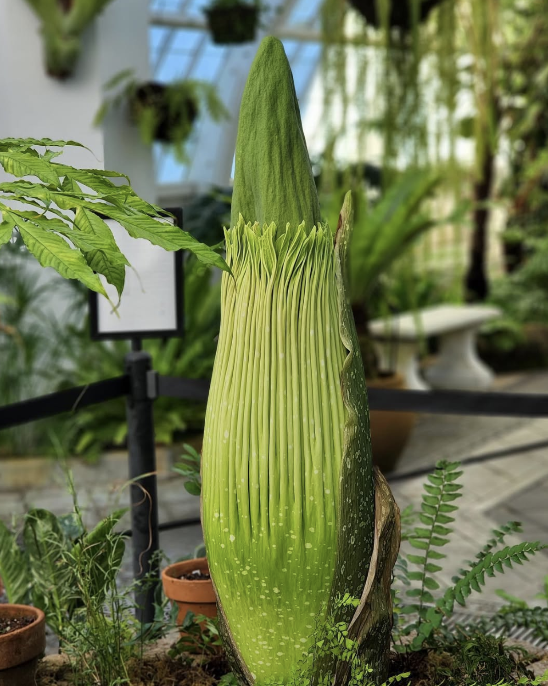
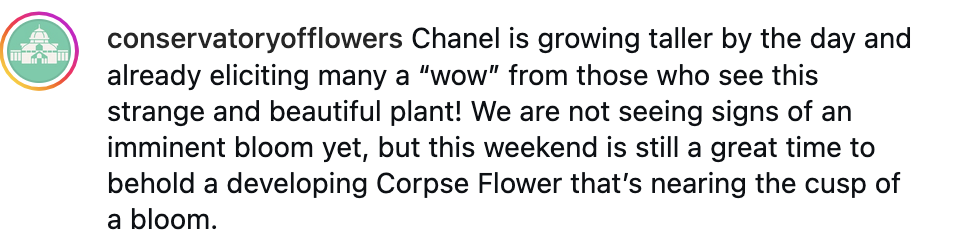
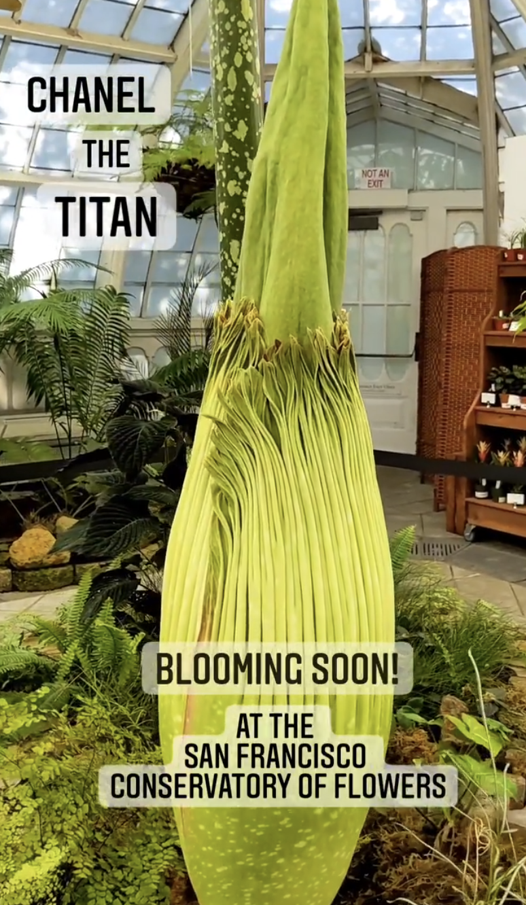
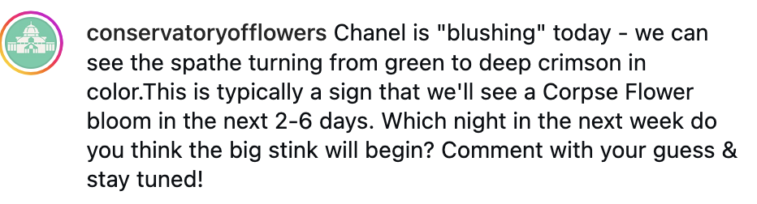

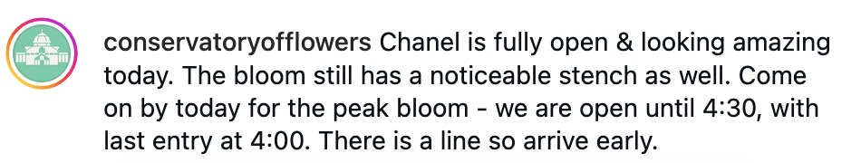
YouTube Live
“YouTube Live” streams were an excellent tool for connecting quarantined online audiences in 2020. Over 5,000 viewers tuned in to see a live pollination, discussions of Corpse Flower conservation, and featured interviews with Conservatory horticulturists, education staff, and volunteers.

Interpretive Signs
I created interpretive signs that offered opportunities to learn more about this species' adaptations, life cycle, and conservation. As visitors waited in line - sometimes for hours! - to view the corpse flower, these signs offered an opportunity to learn more about this strange plant.
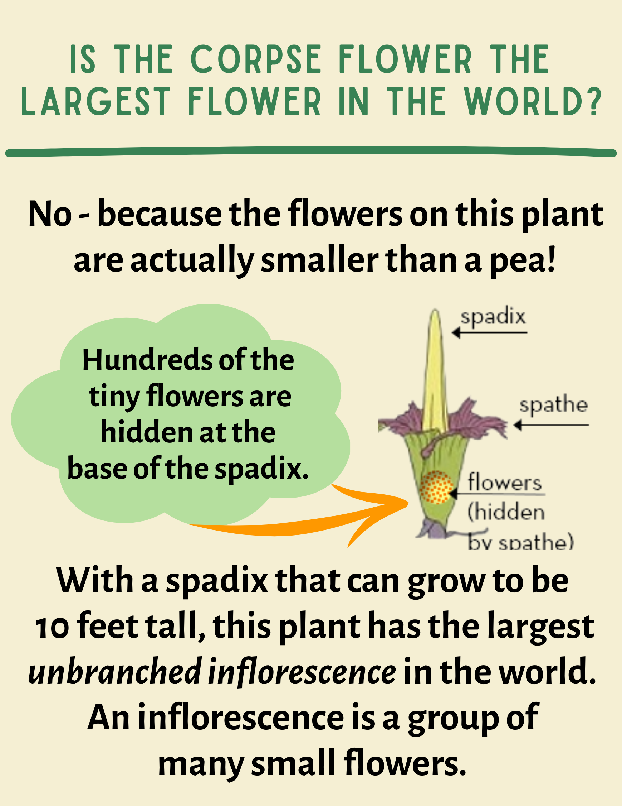
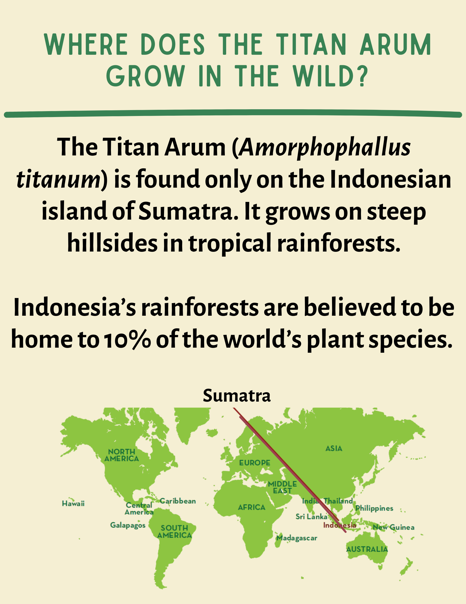
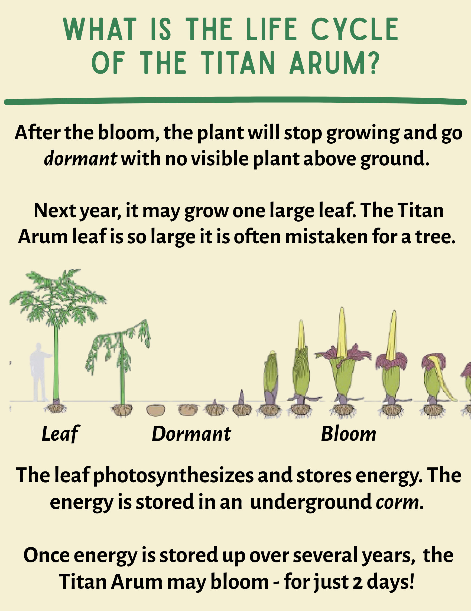
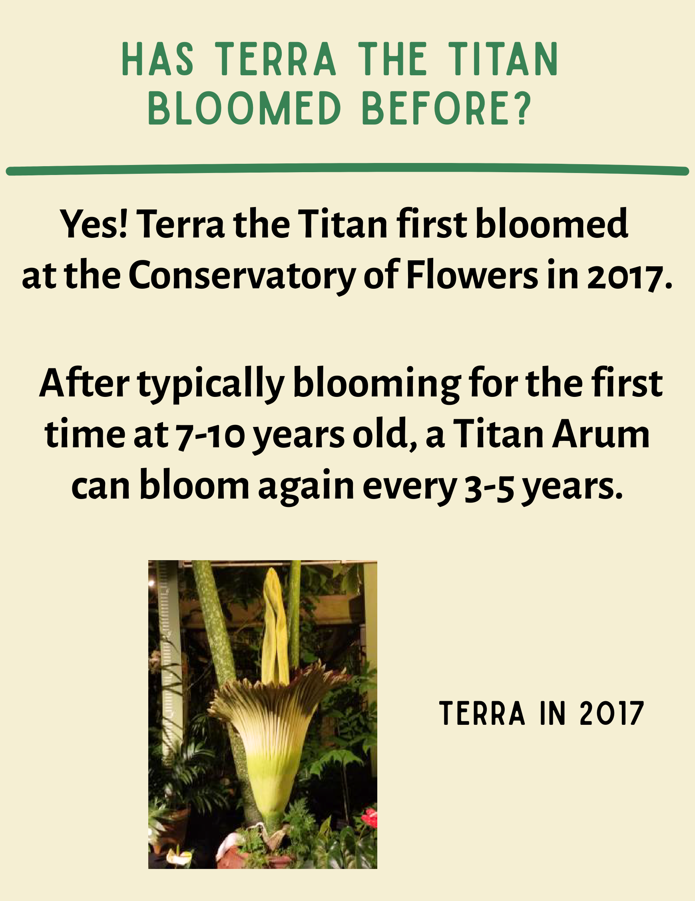
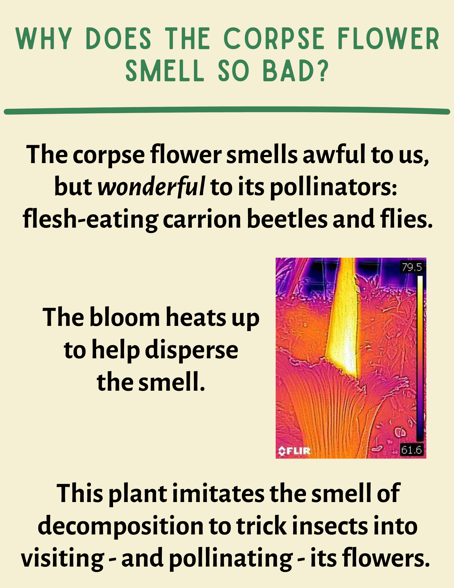
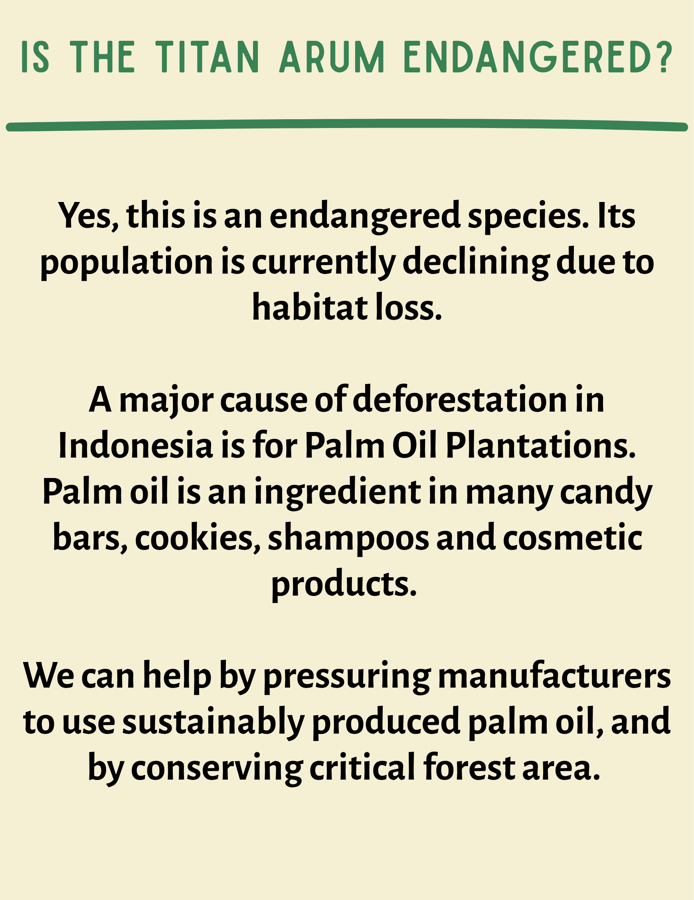